For perfSONAR tests to work correctly, it is critical that the Network Time Protocol (NTP) be configured properly. Almost all the measurements require an accurate system clock to calculate time-based metrics. Failure to have a synced clock can lead to unexpected results such as negative latency values. It is recommended to sync with 4-5 servers (not more), and that they all be fairly close in proximity (less than 20ms RTT). The perfSONAR web interface provides a convenient way to configure NTP. It allows you to select time servers using the following methods:
Note
www.pool.ntp.org servers are not typically accurate enough for perfSONAR’s requirements, and should be avoided.
More details on NTP can be found at NTP Overview.
Open http://<hostname> in your browser where <hostname> is the name of your toolkit host.
Click on Edit (A) in the host information section of the main page or Configuration (B) button in the right-upper corner and login as the web administrator user created during installation.
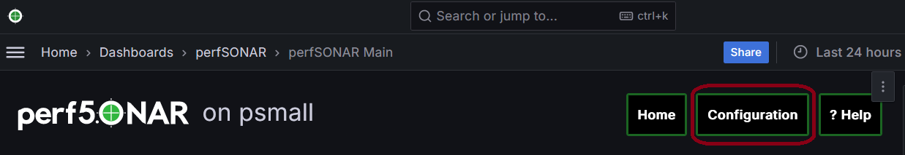See also
See Managing Users for more details on creating a web administrator account.
In the page that loads select Host tab to access NTP configuration. Section NTP Servers in the page that loads can be used to manage NTP. See the remainder of this document for details on using this interface.
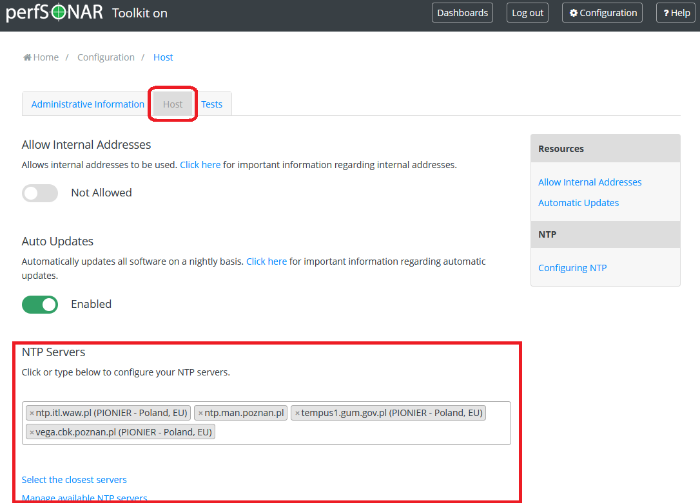
In order to refresh and select the closest NTP servers, go to the NTP Servers section and click Select the closest servers
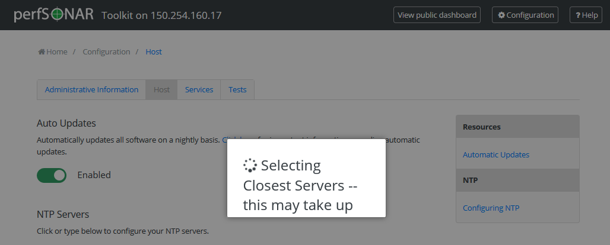
After a loading screen you should see a possibly new list of selected servers. Note that by default perfSONAR selects the closest servers so it is possible this list will remain unchanged.
Click Save to apply your changes. Green message appears to confirm successful configuration change.
In order to manually select a known NTP server available in a list of known servers, go to the NTP Servers section and click on the list of servers area.
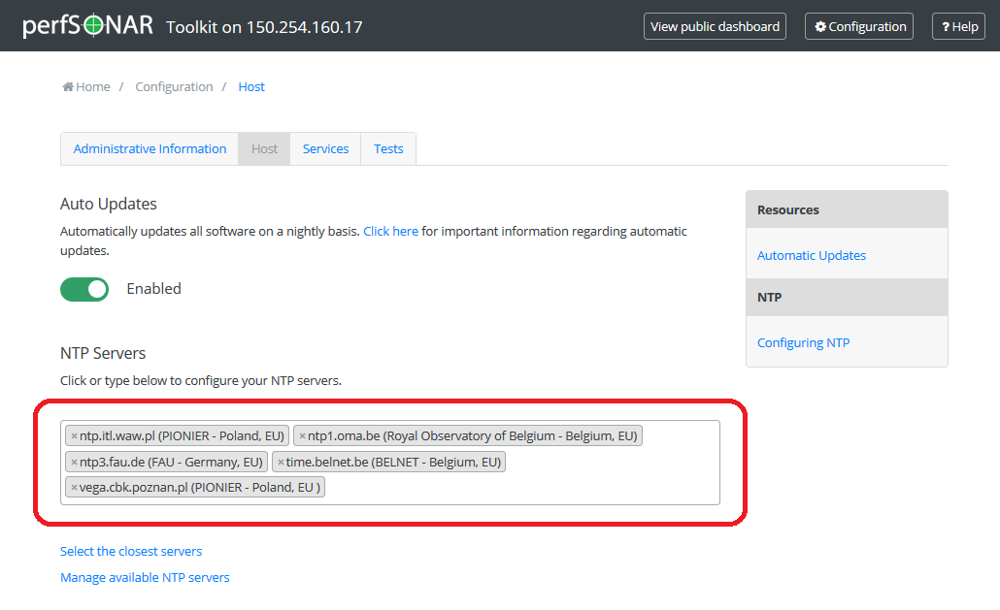
A list of NTP servers opens. Select the servers you’d like to use (highlighted in blue). Other servers already selected in a list are highlighted in grey. Use Ctrl and Shift keys to select multiple servers at once. Selected servers will immediately be added to the list. Also, be sure to recall previously mentioned guidelines about good NTP server selection (4-5 servers less than 20ms RTT away).
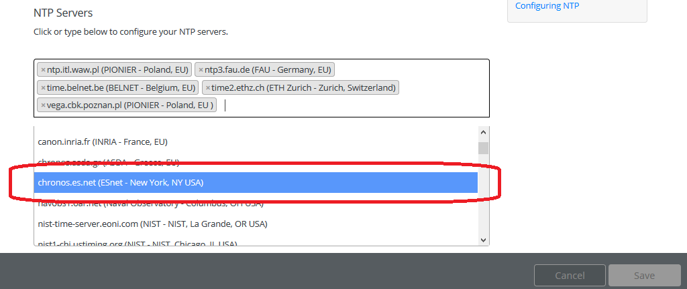
Instead of selecting from the list of know servers you may simply click on the list of servers area and start writing the NTP server hostname or its description (A). Matching servers will automatically appear as available selections in the list below (B).
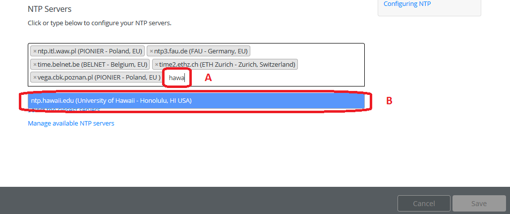
Click Save to apply your changes. Green message appears to confirm successful configuration change.
In order to manually add an NTP server not yet available in a list of known servers, go to the NTP Servers section, click Manage available NTP servers
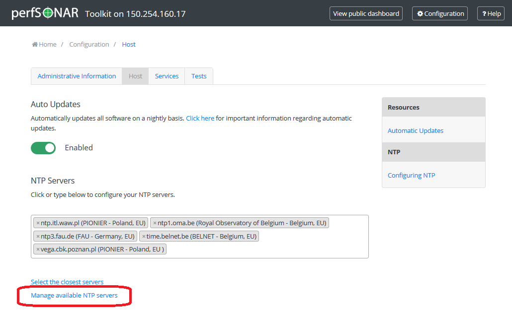
In the windows that opens enter the address and a human-readable description of the NTP server and click Add server.
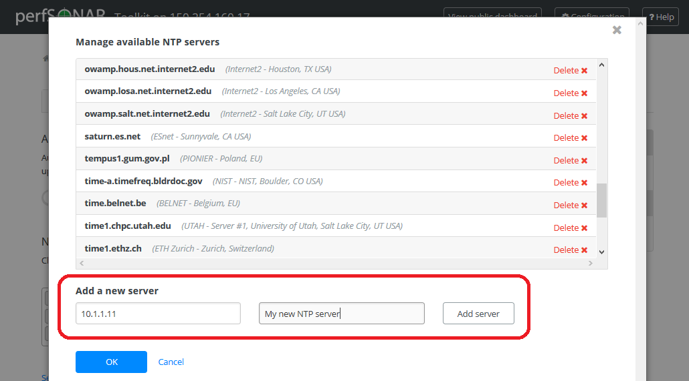
The new server is added to the list of known NTP servers. You may add more servers if needed. When finished click OK to accept the current list of NTP servers.
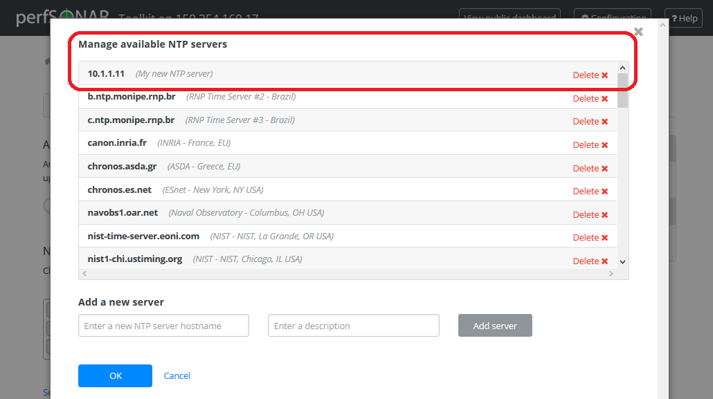
The new NTP server is also automatically added to the list of currently used servers. Click OK to confirm your changes and Save to apply all changes to the system. Green message appears to confirm successful configuration change.
If you wish to deselect a server so that it remains in the known servers list but is not actively used to sync the clock then perform the following steps:
In the NTP Servers section, click x symbol next to the server you want to deselect. As a result the list no longer contains your NTP server.
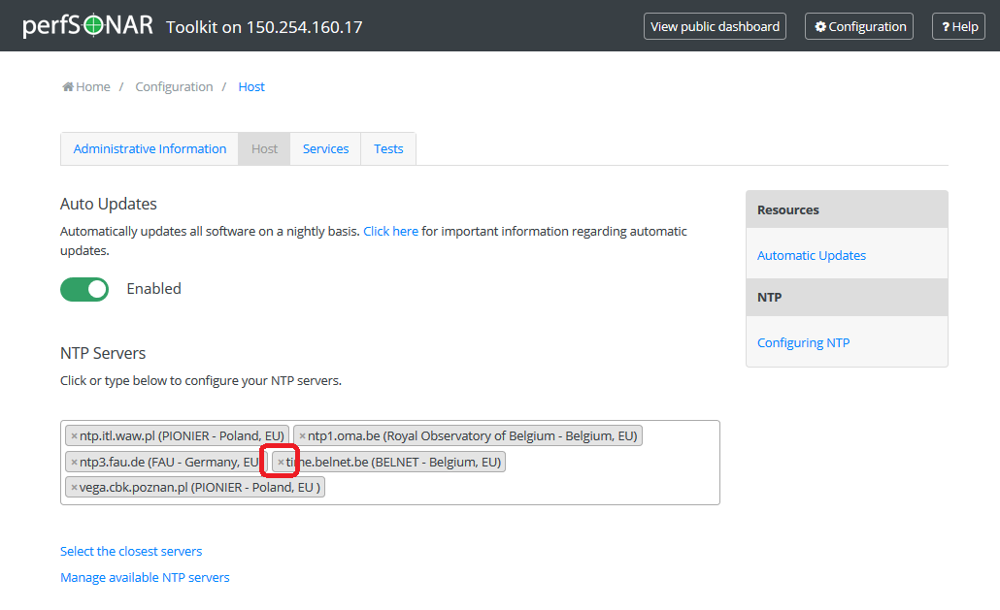
Click Save to apply your changes. Green message appears to confirm successful configuration change.
You may wish to permanently remove a server from the list of known servers. This removes it from consideration for closest server entirely and prevents accidental selection of the server by removing it from the list entirely. This task may be executed with the following steps:
In the NTP Servers section, click Manage available NTP servers
A list of NTP servers loads. Click Delete x next to the server you wish to remove from the list. As a result the list no longer contains your NTP server.
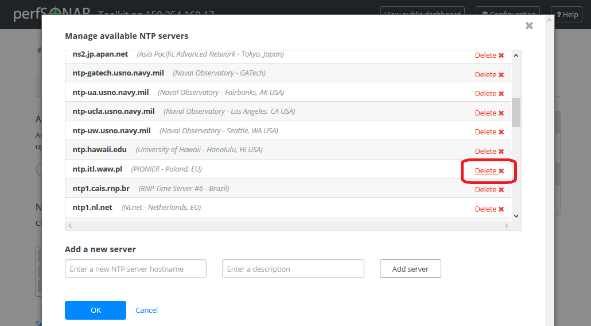
Click OK to accept changes and then Save to apply your changes to the system. Green message appears to confirm successful configuration change.